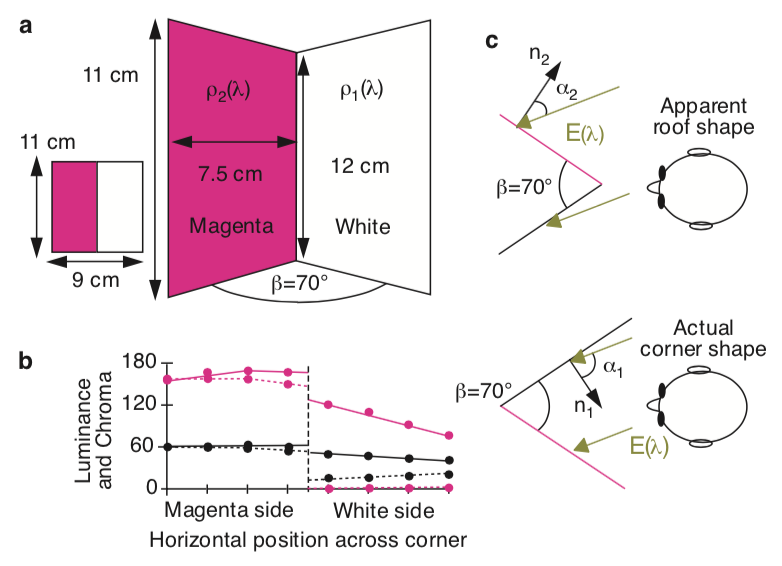

Visual illusion lab
|
1. Apparent surface curvature affects lightness perception Paper, review on lightness perception | |
|
|
2. The generic viewpoint assumption and illusory contours Paper |
|
|
3. Illusory motion from shadows Paper, review on cast shadows For interest, a related set of demos |
|
4. Interactions of motion and form Paper, Demo page | |
|  |
5. Perception of three-dimensional shape influences colour perception through mutual illumination Paper, summary, low-effort version of demo |
|
6. Color brings relief to human vision Paper | |
|
7. Perceptual organization and the judgment of brightness Paper, which includes transparency demos | |
|
8. Contour integration by the human visual system: Evidence for a local "association field" Paper | |
|
9. A theory of visual interpretation in object perception Paper: Section 2. New Contours Are Perceived When Edges Leading into Discontinuities Are Relatable to Others | |
|
10. Perception of shape from shading Paper |